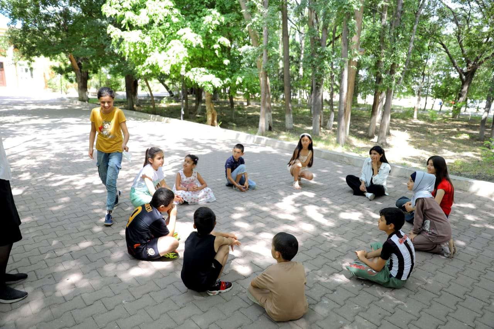

Uşaqların asudə vaxtının səmərəli keçirilməsi necə təmin olunmalıdır?

Uşaqlıq dövrü insanın öyrənməyə ən açıq olduğu və xarakterinin formalaşdığı bir mərhələdir. Bu dövrdə məktəb və dərslərdən kənar qalan vaxt, yəni asudə vaxt, uşağın fərdi inkişafında mühüm rol oynayır. Səmərəli keçirilən asudə vaxt uşağın gizli istedadlarını kəşf etməsinə, sosial bacarıqlarını artırmasına və ruhən dincəlməsinə xidmət edir. Bəs valideynlər bu prosesi necə tənzimləməlidirlər?
1. Sərbəst Oyunun Gücü
Bir çox valideyn uşağın hər dəqiqəsini planlaşdırmağa çalışır. Lakin uşağın heç bir xüsusi məqsəd olmadan keçirdiyi "sərbəst oyun" vaxtı onun yaradıcılığını tətikləyən ən böyük amildir. Sərbəst oyun zamanı uşaq öz qaydalarını qoyur, xəyali dünyalar qurur və problem həll etmə bacarıqlarını sınaqdan keçirir. Ona görə də gün ərzində ən azı bir saatlıq sərbəst vaxt mütləq olmalıdır.
2. Fiziki Aktivlik və İdman
Uşaqlar təbiətən enerjili olurlar. Bu enerjinin düzgün istiqamətə yönəldilməməsi aqressiya və ya diqqət dağınıqlığına səbəb ola bilər. İdman dərnəkləri (üzgüçülük, gimnastika, futbol və s.) uşağın bədən quruluşunu möhkəmləndirməklə yanaşı, onda intizam və komanda ruhunu formalaşdırır. İdmandan əlavə, açıq havada qaçmaq, ağaclara dırmanmaq və ya topla oynamaq uşağın motor bacarıqlarını inkişaf etdirir.
3. İntellektual Oyunlar və Pazllar
Ev şəraitində keçirilən asudə vaxtda intellektual oyunlara (şahmat, dama, stolüstü oyunlar) üstünlük vermək lazımdır. Bu növ oyunlar strateji düşünməni və səbri öyrədir. Pazllar və konstruktorlar (məsələn, LEGO) uşağın məkan qavrayışını və məntiqli düşünməsini gücləndirir.
4. Təbiətlə Ünsiyyət
Təbiətdə keçirilən vaxt uşaqların emosional vəziyyətinə müsbət təsir edir. Yarpaqları toplamaq, daşların formasını araşdırmaq, heyvanları müşahidə etmək uşaqda tədqiqatçılıq ruhu yaradır. Bu həm də uşağın ətraf aləmə qarşı daha həssas və qayğıkeş olmasına kömək edir.
5. Kitab Oxuma Mədəniyyəti
Kitab oxumaq asudə vaxtın ən faydalı formalarından biridir. Kitablar uşağın xəyal dünyasını zənginləşdirir, ona müxtəlif həyat hekayələri vasitəsilə empati qurmağı öyrədir. Valideynlər uşağa sadəcə kitab oxumağı tapşırmamalı, özləri də kitab oxuyaraq nümunə olmalıdırlar. Oxunan kitablar haqqında müzakirələr aparmaq isə uşağın tənqidi təfəkkürünü inkişaf etdirir.
6. Rəqəmsal Gigiyena və Ekran Vaxtı
Müasir dövrdə uşaqları texnologiyadan tamamilə təcrid etmək mümkün deyil, lakin bu vaxta ciddi nəzarət olunmalıdır. Planşet və telefon qarşısında keçirilən saatlar uşağı passivləşdirir və real ünsiyyətdən uzaqlaşdırır. Ekran vaxtı yaşa uyğun məhdudlaşdırılmalı və baxılan məzmunun maarifləndirici olmasına diqqət yetirilməlidir.
7. Birlikdə Keçirilən Keyfiyyətli Vaxt
Ən səmərəli asudə vaxt valideynlə birlikdə keçirilən vaxtdır. Sadəcə eyni otaqda olmaq kifayət deyil. Birlikdə yemək bişirmək, şəkil çəkmək və ya gəzintiyə çıxmaq uşağa özünü dəyərli hiss etdirir. Bu anlar uşağın özgüvəninin artmasında və ailə bağlarının möhkəmlənməsində həlledici rol oynayır.
Nəticə
Asudə vaxtın təşkili uşağın fərdi maraqlarına uyğun olmalıdır. Hər bir uşaq fərqlidir və onun nəyə daha çox maraq göstərdiyini anlamaq üçün valideyn müşahidəçi və dəstəkçi olmalıdır. Unutmayın ki, səmərəli keçirilən hər bir an uşağınızın gələcək uğurlarının təməlidir.
Nümunəvi Həftəlik Asudə Vaxt Planı
| Vaxt Aralığı | Fəaliyyət Növü | Nümunə |
|---|---|---|
| Səhər (10:00 - 12:00) | Fiziki Aktivlik | Parkda gəzinti, idman hərəkətləri |
| Günorta (14:00 - 16:00) | İntellektual İnkişaf | Mütaliə, pazllar, stolüstü oyunlar |
| Axşamüstü (17:00 - 19:00) | Yaradıcılıq | Şəkil çəkmək, LEGO, əl işləri |
| Axşam (20:00 - 21:00) | Ailə Vaxtı | Günün müzakirəsi, sakit hekayə |


Şərhlər